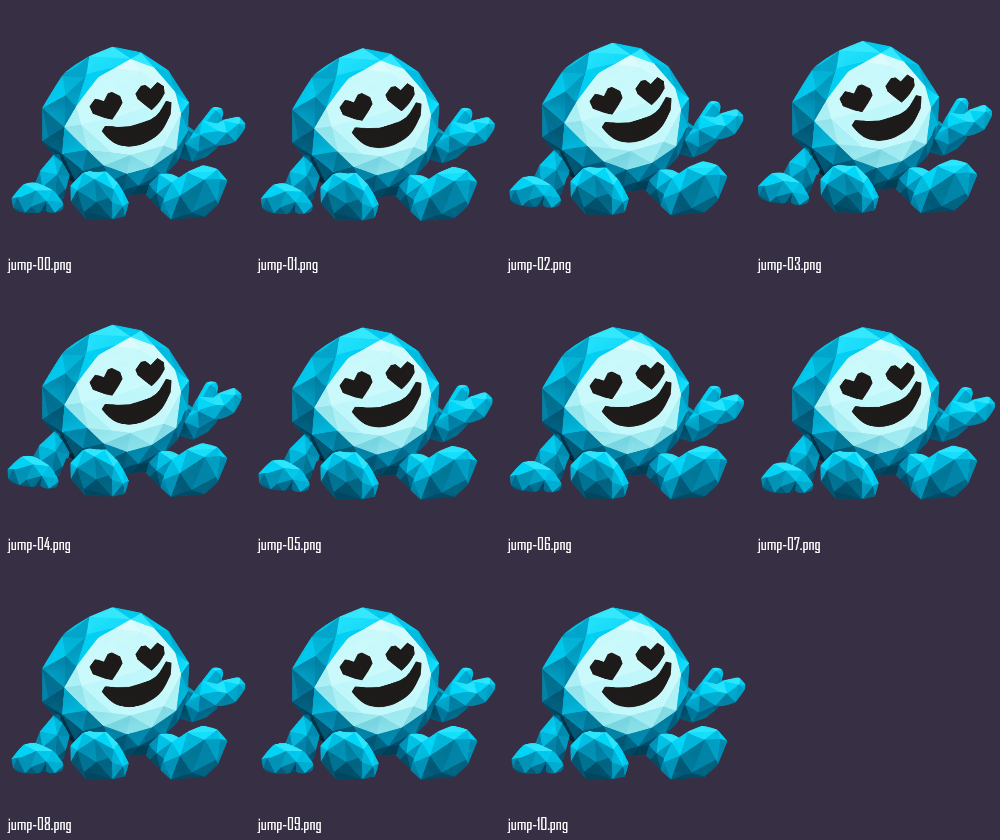
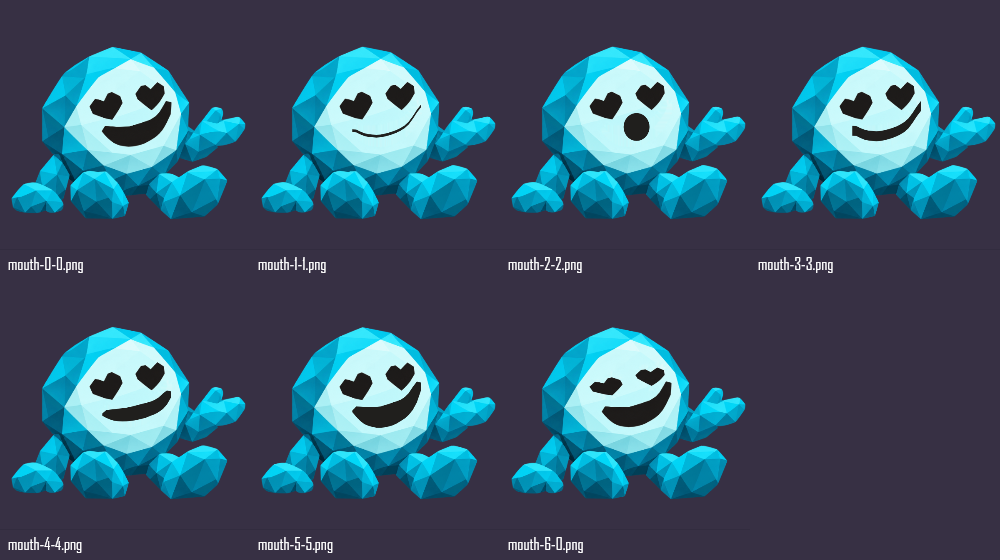

Amostra real em React e Rive, com três questões de teste. Não coleta erros da rodada nem grava progresso. Sem voz gravada ou sintetizada.
HEAD f174506abb7d415bac7898913bab852c08510c4e mais alterações locais.
Hashes e versão. Resultados da tela.
Sequências do rig.
Abrir a amostra funcionando · Selecionar cada reação no laboratório Rive
Vídeos: fala por palavras, interrupção por seis reações consecutivas, repouso, resposta incorreta e correta. Capturas Edge headless. PC 1440×1000 e celular simulado 390×844, claro/escuro. Não é teste em aparelho físico, Safari ou Firefox. Sons não avaliados nestes vídeos.

A sequência de imagens não substitui a conferência do vídeo. O repouso usa o recorte original da boca; as reações voltam a ele.
